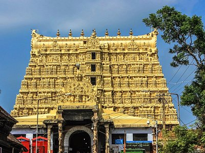

The term Kerala was first epigraphically recorded as Cheras (Keralaputra) in a 3rd-century BCE rock inscription by the Mauryan emperor Ashoka of Magadha. It was mentioned as one of four independent kingdoms in southern India during Ashoka's time, the others being the Cholas, Pandyas and Satyaputras. Kerala is one of the small states of India in terms of area. it consists of only 1.3 per cent of the total area of India. The state is located in the southwest corner of India. Karnataka and Tamil Nadu bound it on north, east and south and on east by the Arabian Sea.
KochiKochi (also known as Cochin) is a city in southwest India's coastal Kerala state. It has been a port since 1341, when a flood carved out its harbor and opened it to Arab, Chinese and European merchants. Sites reflecting those influences include Fort Kochi, a settlement with tiled colonial bungalows and diverse houses of worship. Cantilevered Chinese fishing nets, typical of Kochi, have been in use for centuries. |
KovalamKovalam is a small coastal town in the southern Indian state of Kerala, south of Thiruvananthapuram. At the southern end of Lighthouse Beach is a striped lighthouse with a viewing platform. Palm-backed beaches also include Hawa Beach and Samudra Beach. Heading south, Vizhinjam Juma Masjid mosque overlooks the busy fishing harbor. Inland, Sagarika Marine Research Aquarium displays technology used in pearl production. |

thiruvannanthapuramThiruvananthapuram (or Trivandrum) is the capital of the southern Indian state of Kerala. It's distinguished by its British colonial architecture and many art galleries. It’s also home to Kuthira Malika (or Puthen Malika) Palace, adorned with carved horses and displaying collections related to the Travancore royal family, whose regional capital was here from the 18th–20th centuries. |
VarkalaVarkala is a town in the south Indian state of Kerala. It’s on the Arabian Sea and known for Varkala Beach, backed by palm-covered red cliffs. Just south, Papanasam Beach is believed to have holy waters. On a nearby hill, the ancient Janardanaswamy Temple is a Hindu pilgrimage site dedicated to Vishnu. Farther inland, the Sivagiri Mutt monument memorializes the social reformer Sree Narayana Guru, who is buried here. |